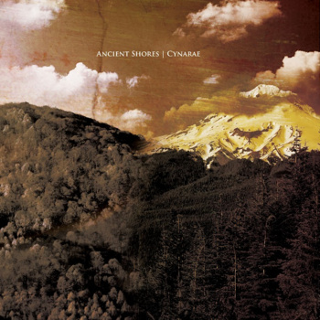
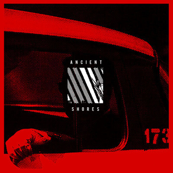
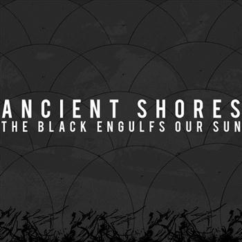

/// BIOGRAPHY
With start-stop song structures, aggressive lyrics and tempos that will take sudden cliff dives - Ancient Shores writes music to depict the changes in life that many fear to face. This 6 piece ensemble of eclectic musicians from Morgantown, WV fuses doom, punk, and metal in a way that other musicians do not explore.
/// HIGHLIGHTS
- International distribution of Step to the Edge 7" and split 12": RevHq, Deathwish Inc, iTunes
- Has shared the stage with acts such as: Converge, Buring Love, Despise You, Gehenna, Black Breath, Martyrdod, Full of Hell, Kowloon Walled city, The Secret, Karma to Burn, Cancer Bats, Trap Them, Skeletonwitch, Code Orange Kids, La Dispute, The Minor Times, and many more.
- Part of First Act Emerging Artist Program
- Working on 7" split with Minneapolis band Mourner, slated for release March 2013
Management / Booking
ancientshoresband@gmail.com(Left to Right) Bj Rochinich - Guitar, Brett Carpenter - Guitar, Clayton Smith - Drums, Greg Zalenski - Vocals, Joel Wadsworth - Bass, Evan Devine - Drums
/// DISCOGRAPHY
|

2013 - Ancient Shores / Cynarae 12" (A389 Records)
|

2011 - Step to the Edge 7" (A389 Records)
|

2010 - The Black Engulfs Our Sun (Self Release)
|
2009 - Client State (Self Release)
|
/// MEDIA
/// PRESS
Exclaim! reviews Ancient Shores / Cynarae split (8/10) Profanity reviews Ancient Shores / Cynarae split
"Reaper" included in Thrice Property of Zach playlist
Stereokiller review of Step to the Edge (4/5)
"Thrashed" on Metal Injections "Thrash it or Trash it"
Scene Point Blank reviews Step to the Edge
Stereokiller reviews Step to the Edge
AOL Noise Creep Underated Band Feature
Nefarious Realm asks Greg what he would do in a zombie apolcolypse
Hardcore Guitar asks Brett what's in his rig
Hardcore Guitar asks Joel what's in his rig
WVU Student paper interview about A389 signing
WV Graffitti magazine finds out what makes Ancient Shores tick
Local band Ancient Shores to release new album on vinyl
Decibel Magazine feature A389 compilation
Alternative Press covers The Outsides ft. Ancient Shores
Decibel Magazine reviews Step to the Edge 7"